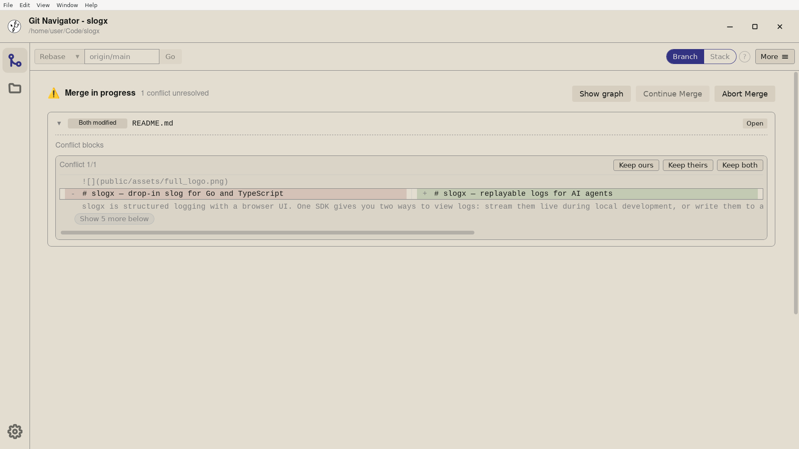

Resolve conflicts without hunting for conflict markers
When a merge, rebase, or cherry-pick stops on a conflict, Git Navigator replaces the graph with a focused conflict view. No more digging for <<<<<<< markers by hand — every conflicted file is listed in one place, every block has a one-click keep ours / keep theirs / both choice, and the rest of your repository stays one tab away.

How Git Navigator handles a conflict
A conflict banner you cannot miss
As soon as Git pauses on a conflict, Git Navigator replaces the graph with a banner that names what is in progress — merge, rebase, cherry-pick, or stash apply — and the files that need attention.
Block-level "ours / theirs / both"
Each conflict marker becomes a block in the editor with explicit actions, so you can keep one side, take the other, or merge them by hand without re-typing the file.
Whole-file shortcuts when you know
Sometimes the answer is "always keep mine for this file." Use Keep Ours, Keep Theirs, or Delete on the file itself and move on.
Abort or continue in one place
When you are done, continue the merge or rebase from the same banner. Decided it was a mistake? Abort, and the working tree returns to where it was before.
Walking through a conflict
- Start the operation as normal. Drag a branch onto another to rebase, run a merge, or cherry-pick a commit. Git Navigator only takes over the view when Git itself stops.
- Open the conflict banner. The banner appears at the top of the graph with the conflict type and the list of conflicted files. Click a file to jump straight to its conflicts.
- Resolve block by block. Pick Keep Ours, Keep Theirs, or Both on each conflict block, or edit the file directly when the right answer is a hand-merge.
- Continue or abort. Once every block is resolved, continue the merge or rebase from the banner. If anything goes wrong, abort and the working tree returns to its pre-conflict state.
Frequently asked questions
Does Git Navigator handle conflicts from merge, rebase, and cherry-pick?
Yes. The conflict view detects merge, rebase, and cherry-pick states from the on-disk Git directory, so the same banner and actions cover all three operations.
Can I resolve specific blocks instead of whole files?
Yes. The conflict editor turns each conflict marker into its own block with explicit "keep ours", "keep theirs", and "both" actions, so you can pick the right side per block.
What if I want to abort the merge or rebase?
Use Abort from the conflict banner. Git Navigator runs the underlying `git merge --abort` or `git rebase --abort` and the working tree returns to its pre-operation state.
Does the conflict view work when I have linked worktrees?
Yes. The conflict banner is scoped to the active worktree, so a paused merge in one worktree does not block work in the others.